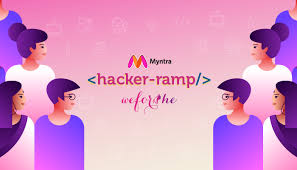

|
Aastha Ketan Kataria I'm a B.Tech Information Technology student at K J Somaiya College of Engineering, Mumbai, with a focus on AI & ML. I'm interested in robotics, computer vision, and practical AI applications that solve real-world problems. I work on projects that bridge theory and practice—from developing tactile robotics systems to creating AI models for medical diagnostics. My recent work has centered on industrial AI applications and autonomous systems. |

|
Research PapersI focus on AI applications in healthcare and robotics, developing practical machine learning solutions for real-world problems. |

|
DeepPET-3D: A 3D Convolutional Neural Network for Early Detection of Alzheimer's Disease Using 18F-FDG PET Imaging
Aastha Ketan Kataria, et al.-Best Speaker Award Taylor & Francis, ICTEAH, 2025 3D convolutional neural network for early Alzheimer's detection using PET imaging. Achieved 96.91% accuracy by analyzing complete 3D brain scans. |

|
Machine Learning-Based Disease Prediction System using Symptom Analysis
Aastha Ketan Kataria, et al. Taylor & Francis, ICTEAH, 2025 Weighted KNN model predicting 230+ diseases from symptoms with 93.5% accuracy. Enables scalable preliminary health screening. |

|
Comparative Analysis of Standard vs. Curriculum-Based PPO in Quadrupedal Locomotion
Aastha Ketan Kataria, et al. Springer, ICICCT, 2025 Comparative study showing standard reinforcement learning outperformed curriculum-based approaches in complex quadrupedal locomotion due to negative transfer effects. |
HackathonsCompetition-driven development projects showcasing rapid prototyping and team leadership skills. |

|
SimpleSwastha: Hospital Management System
Aastha Ketan Kataria (Team Lead) Smart India Hackathon, 2024 - WINNER Led team to victory in national hackathon, selected from 500+ applicants to final 5 teams. Developed comprehensive hospital management application for patient care and medical record management. |

|
MoneyMind: Multi-Agent Financial Assistant
Aastha Ketan Kataria (Team Lead) Google Solution Challenge, 2024 Multi-agent GenAI financial assistant powered by Google Gemini for new investor guidance. Built complete system from concept to deployment despite hardware constraints. |
|  |
Myntra WeForShe Hackathon
Aastha Ketan Kataria (Team Lead) Myntra WeForShe Hackathon, 2024 - PRE-FINALIST Advanced from 1000+ participants through multiple rounds to reach the Grand Finale. Demonstrated product development and pitching skills in competitive fintech environment. |
Robotics TeamLeading marine robotics development for environmental applications using ROS and autonomous systems. |

|
The Marine Robotics Team: Aquatic Environmental Systems
Aastha Ketan Kataria (Team Captain) Ongoing Project, 2023-2025 Leading development of 'Nisrag,' a sewage cleaning robot, an aquatic desilting robot, and a drone-based groundwater mapping system using ROS. These systems address environmental challenges through autonomous robotics and sensor integration. |
Industrial ProjectsApplied AI research in industrial settings, focusing on computer vision and quality control automation. |

|
Real-time Contaminant Detection in Industrial Sugar Production
Aastha Ketan Kataria (Project Lead) Godavari Biorefineries Ltd., 2024-2025 Leading team of 15 to develop YOLOv8-based real-time contaminant detection system for industrial sugar production lines. Project focuses on automating quality control in manufacturing environments. |
Experience |
|
AI Engineer Intern - CredArtha (2025)
Project Lead - Godavari Biorefineries Ltd. (2024-2025)
Summer Intern - PiPay (2024)
Developer - Virtual Labs (2025) |
Selected AwardsSmart India Hackathon 2024 Winner • Myntra WeForShe Hackathon Pre-Finalist • Best Speaker Award (ICTEAH 2025) • Top 70/300 at "Story of Makers" Exhibition • Third Place at INSEF Science Fair |
BackgroundMy interdisciplinary foundation spans athletics (table tennis, gymnastics, sailing), Sea Cadet Corps leadership training, and early robotics work. This diverse background enables me to approach technical challenges from multiple perspectives and communicate complex concepts to diverse audiences. From building auto-movable shopping trolleys in middle school to leading teams in national hackathons, each experience has built resilience and problem-solving skills that inform my current research and development work. |
|
Website design inspired by Jon Barron
|